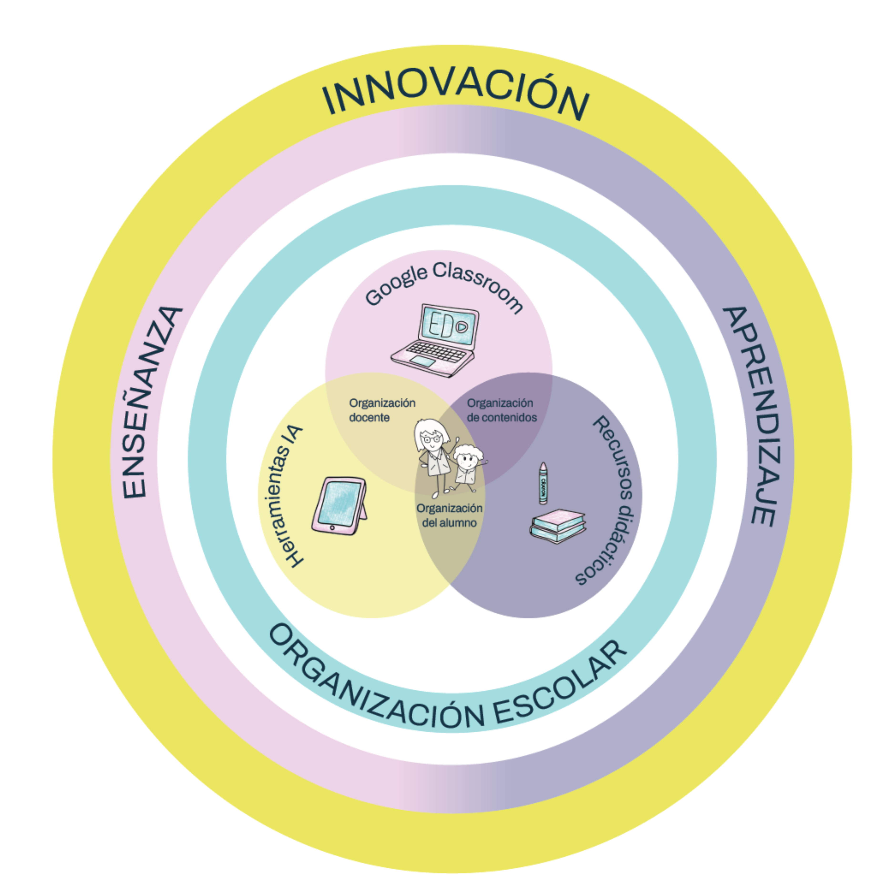
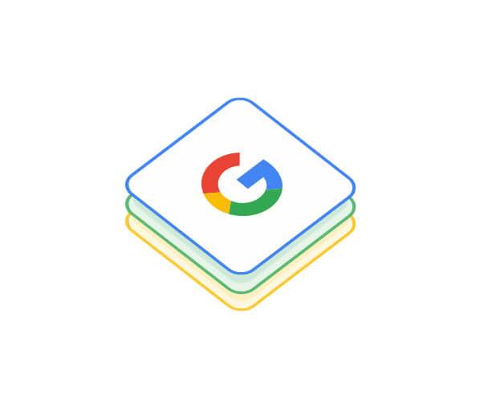

¿ Qué es el Ecosistema?
Un entorno para la innovación
El Ecosistema Digital integra múltiples herramientas y materiales de manera ordenada para acompañar y enriquecer los procesos de enseñanza y aprendizaje. De esta manera, el aula virtual se convierte en un entorno donde la tecnología potencia la experiencia educativa.
¿Qué ofrece?
Un ecosistema conectado de herramientas y plataformas digitales y materiales curados, donde la inteligencia artificial potencia cada propuesta pedagógica y personaliza la experiencia para lograr aprendizajes más significativos
Guía para docentes, estudiantes y familias
Esta guía reúne recursos y orientaciones prácticas para incorporar IA en el aula y preparar a la comunidad educativa para un futuro donde la tecnología amplifica lo humano y potencia una educación innovadora y colaborativa.

Avatares de Secundaria Aprende
Los Avatares de Secundaria Aprende son asistentes pedagógicos que, entrenados con IA, ayudan a los docentes a resolver consultas, armar planes de aprendizaje, recibir explicaciones y retroalimentación inmediata. Funcionan como una puerta de entrada simple: elegís un avatar, preguntás y obtenés apoyo concreto que te permitirá potenciar tus prácticas de enseñanza.
¿Cómo usar los avatares?
Hacé click
Elegí el avatar de la materia y hacé click en el botón circular.
Abrí el chat
Se abrirá una nueva pestaña con tu asistente de IA personalizado.
Consultá
Escribí tus preguntas y recibí apoyo concreto para enseñar mejor.
Matemática y Lengua
Laboratorio de Ciencias Sociales
Laboratorio de Ciencias Naturales
Talleres, Proyectos y Asesores
Diseñá tu propio asistente de planificación especializado en el área que necesites. También podrás compartir aportes y mejoras para los avatares en el botón que se encuentra debajo.
Aplicaciones del Ecosistema
.png)
Entorno


.png)

Elegí tu perfil
Preguntas Frecuentes
¿Qué es el Ecosistema Digital para la Innovación Educativa?
Es un entorno interconectado que articula plataformas, herramientas de Inteligencia Artificial (IA), contenidos y prácticas pedagógicas para mejorar la calidad educativa en la escuela secundaria. Su objetivo es potenciar el aprendizaje personalizado y apoyar la labor docente sin reemplazar la intervención humana.
¿Cuál es el rol de la Inteligencia Artificial en este proyecto?
La IA funciona como un asistente pedagógico que ayuda a los docentes a planificar y generar contenidos, mientras que a los estudiantes les brinda tutoría inteligente y apoyo personalizado para resolver tareas.
¿Qué plataforma centraliza todas estas herramientas?
El corazón del ecosistema es el aula virtual, específicamente a través de Google Classroom. Es el eje donde se integran los contenidos, las interacciones, las evaluaciones y las aplicaciones de IA.
¿Qué es Khanmigo y cómo ayuda a los docentes?
Es un asistente de IA que funciona como un "copiloto pedagógico". Ayuda a los docentes a planificar clases, generar actividades, sugerir consignas y anticipar dificultades comunes en los estudiantes.
¿Cómo se utiliza Gemini en el aula?
Para estudiantes: Actúa como un acompañante que responde preguntas, genera resúmenes y brinda explicaciones ajustadas al nivel de cada usuario.
Para docentes: Facilita la planificación, la creación de materiales diversos y la diversificación de estrategias de enseñanza.
¿Qué otras herramientas integran el ecosistema?
Se incluyen herramientas como Khan Academy (contenidos de calidad en Matemática, Ciencias y Lengua), Google Teaching and Learning (para crear materiales interactivos) y Planes de aprendizaje digitales.
¿La IA reemplazará a los profesores?
No. La IA está diseñada para amplificar y fortalecer las habilidades humanas, permitiendo que el docente se enfoque en lo más valioso: acompañar, guiar y motivar a cada estudiante.
¿Qué cuidados se deben tener al usar IA?
Es fundamental el pensamiento crítico, ya que la IA puede presentar errores o sesgos. Se recomienda a los estudiantes no compartir datos personales y siempre verificar la información con otras fuentes.
¿Cómo se garantiza la integridad académica?
El ecosistema promueve el desarrollo de procesos cognitivos superiores (como el razonamiento y la creatividad) y sugiere nuevas estrategias de evaluación, como la escritura en clase y la resolución colaborativa de problemas.
¿Cómo pueden participar las familias en este ecosistema?
Las familias pueden realizar un seguimiento accediendo a Google Classroom o visualizando el progreso en plataformas como Khan Academy. Su rol es fomentar una actitud responsable hacia el uso de la tecnología.
¿Es necesario que los padres sepan usar IA?
Se busca promover la alfabetización digital también en las familias para que puedan acompañar el proceso de aprendizaje desde un lugar informado y comprometido.